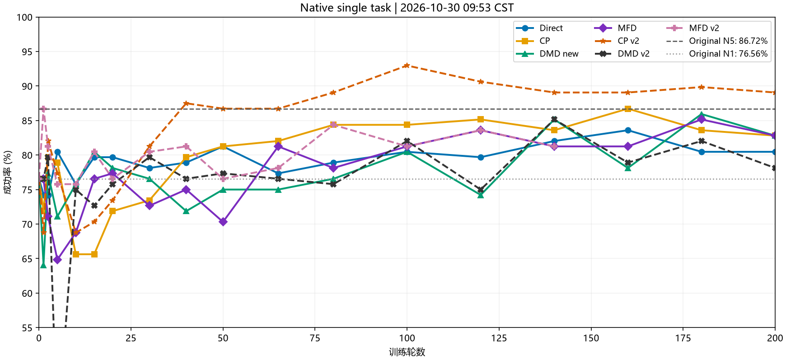
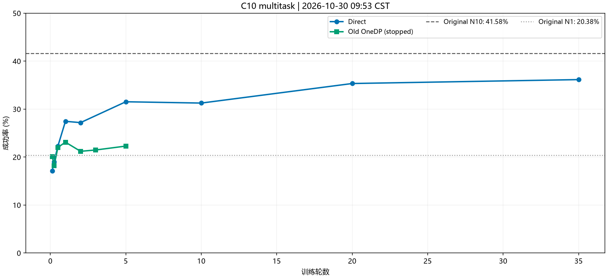
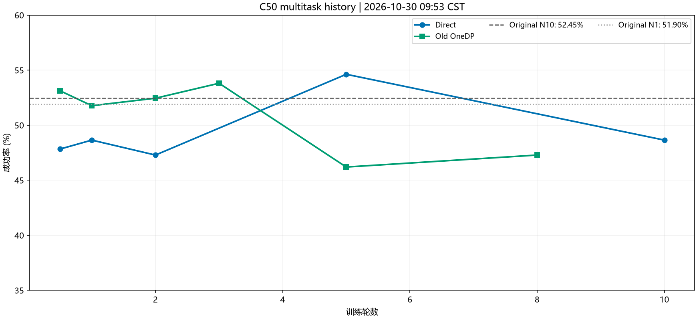

| 卡 | 训练 | 进度 | 剩余含评估 |
|---|---|---|---|
| 4/5 | 多任务 Direct C10 | 53320/55650；47.9/50轮 | 6–8小时 → RLT |
| 6/7 | MFD v2 | 1990/2600；153.1/200轮 | 2.5–3.5小时 → 后续队列 |
新完成：DMD v2 200轮，末代100/128=78.1%，最佳109/128=85.2%。末代比最佳回落7.0个百分点；未稳定超过原始N5的86.7%。MFD v2最新104/128=81.3%，最好为早期111/128=86.7%，后续仍有波动。单次128回合不能把小差距当确定改善。

| 单任务同族 | 最新完整评估 | 最好 |
|---|---|---|
| Direct | 80.5% (103/128) | 83.6% |
| CP | 82.8% (106/128) | 86.7% |
| DMD new | 82.8% (106/128) | 85.9% |
| MFD | 82.8% (106/128) | 85.2% |
| CP v2 | 89.1% (114/128) | 93.0% |
| DMD v2 | 78.1% (100/128) | 85.2% |
| MFD v2 | 81.2% (104/128) | 86.7% |
横轴为训练轮数；原始N5 86.7%、N1 76.6%；FQL失败曲线默认不展示。
Direct尚无新完整评估：最新仍133/368=36.1%；原始N10为41.6%、N1为20.4%。训练进度不等于新的评估成绩。


| MFD v2 →200轮 | 2.5–3.5 h |
| Direct 200→400轮 | 5–6.5 h |
| CP v2 200→400轮 | 5–6.5 h |
| DMD new 200→400轮 | 6–8 h |
| MFD 200→400轮 | 9–11 h |
| FQL-fix →200轮 | 9–12 h |
| 逐卡RLT | 候补 |
全队列粗估37–48小时，含评估和重载，不含异常重试；按近期训练耗时及历史评估耗时估算。
四路RLT正常等待：4/5/6/7恢复点225/225/25/300；唯一调度器存活，最新心跳正常，检查点、配置和环境记录均存在。当前与后续队列结束后接管。
0–3卡计算和图形快照均空；4–7卡全是chenyiteng。显存4/5各67.3 GiB、6/7各75.1 GiB，最高69℃、无热降频。GPU瞬时100%，另一短采样MFD约56–59%，瞬时值不代表整段平均。
RAM可用1650.4/2015.5 GiB，load7.18，CPU/内存/IO压力均接近0。Home余168.0 GiB，Data余128.1 GiB，根盘余214.7 GiB。本轮未删除。
近6小时未见OOM、GPU Xid或磁盘I/O异常；常见挖矿名称和端口筛查无命中。其他用户有登录会话，但本次未见其GPU作业，未修改其进程。网卡无新增错误/丢包；GitHub直连超时、HF直连TLS失败，既有17890代理两者均200。
未来400轮段按最近2个完整点＋本段最佳保留，保留200轮点。Home余量需继续观察；容量预检及失败后接下一方法的处理已在后续队列内，RLT也需要保存空间。